🎀 教育目標
可自由設計路線與關卡，玩家在擲骰子與決策過程中，以遊戲化方式強化地震/水災/火災的防災意識，
1) 特色
- 可設計路線的地圖編輯器，可依不同參與者設計不同難度的遊戲，難度可調整
- 三大題庫分流：只出對應類題，可針對不同課程主題教學，知識點更聚焦。
- 答題記錄可針對玩家答題情況進行統計與補救教學
- 地產購買門檻：森林地／低窪地／高樓大廈等可擁有地產，結合答題與資源配置。
- 雙模式：積分制（達標即勝）與限時制（時間到比高分），時間容易配合。
- 視覺化記分板：進度條＋避難卡圖示，提升學生學習動力。
- 低成本更新、可擴充：圖示/題庫/事件改了就即時生效，可持續擴展，免重新印製桌遊。
2) 教育意義
- 知識格：強化正確知識→答對加分。
- 事件格：隨機情境與決策練習；退回、回起點、加分等。
- 急救包格：平時準備換取災時優勢。
- 地產格：低窪地／森林地／高樓大廈，有足夠分數可購買。
- 躲避格：就地掩護，正確避震觀念 主題：校園/家庭防災 學段：國小中年級 類型：教育型桌遊
3) 進步性
- 模組化題庫：可依據課綱擴充題目，提升學生防災知識
- 內建答題檢視：可輸出學習紀錄，可做為評量使用
- 勝負制與視覺化記分板：透過比賽勝負機制提升學生學習動機。
4) 新穎性
- 路徑不是固定的：可依不同情境設計不同路線
- 學習即時回饋：答對加分
- 模擬真實風險：事件卡的設計可模擬真實風險
🚀 快速上手
先用編輯器設定地圖，再開始遊戲。
1) 編輯地圖
- 按下右上角編輯地圖按鈕 ， 可自行拖曳路徑圖或選擇 地圖1 / 地圖2 / 地圖3
- 上方選項可調整遊戲模式（積分 / 限時），設定遊戲人數和語言選擇。
- 按下 開始遊戲，開始進行遊戲
小提醒：拖曳路徑圖 的順序就是行走的路徑。
2) 開始遊戲
- 玩家依序按 擲骰 玩家移動。
- 棋子移動到格子後才會觸發效果（問答、事件、拿卡、購買地產等）。
🖱️ 透過滑鼠操作與進行遊戲
⌨️ 空白鍵 也可擲骰
📐 基本規則
回合流程
- 玩家按下 擲骰。
- 依骰子點數行進移動至新位置並觸發格子效果（問答 / 事件 / 技能卡 / 地產 / 道具）。
- 處理結算（加分、購買、移動、換人）。
- 完成一圈時可加分。
模式
- 積分制：先達到目標分數的玩家獲勝。
- 限時制：時間到時分數最高者獲勝。
模式與參數可在 地圖編輯 頁面設定。
🧩 格子一覽
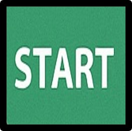
起點
起始點
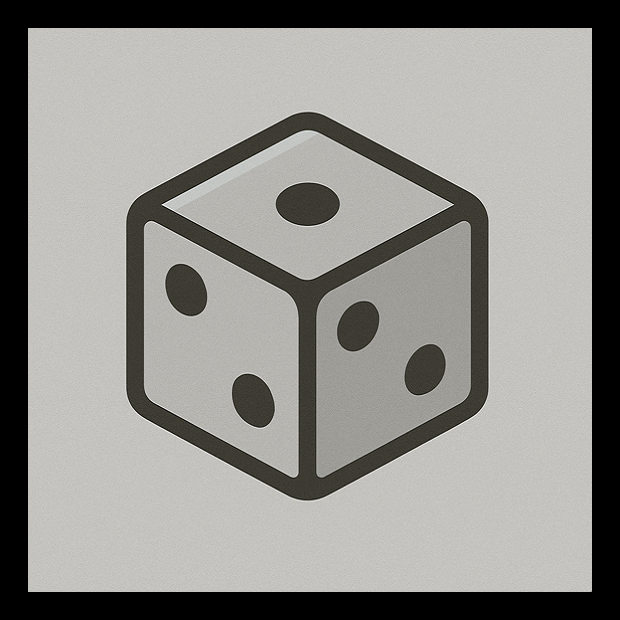
骰子格
再擲一次。
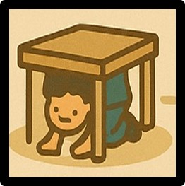
躲避
發生地震，躲到桌下，正確躲避，加5分
躲避卡
+1 張躲避卡。
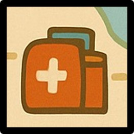
防災包
家中備妥防災包，正確防災觀念， +5 分。
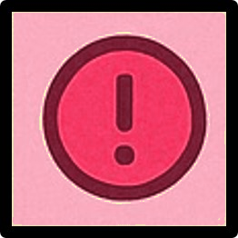
事件卡
前進/後退/回到起點/得分/停一回合…
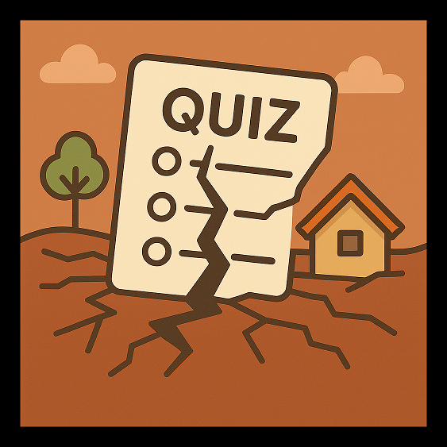
地震問答
彈出地震相關題目，答對加分。
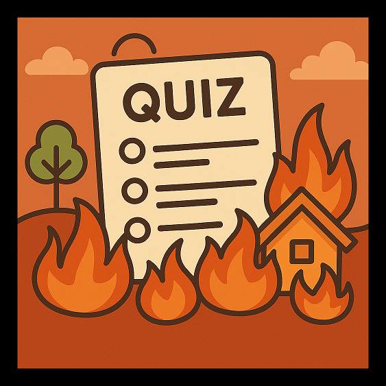
火災問答
彈出火災相關題目，答對加分。
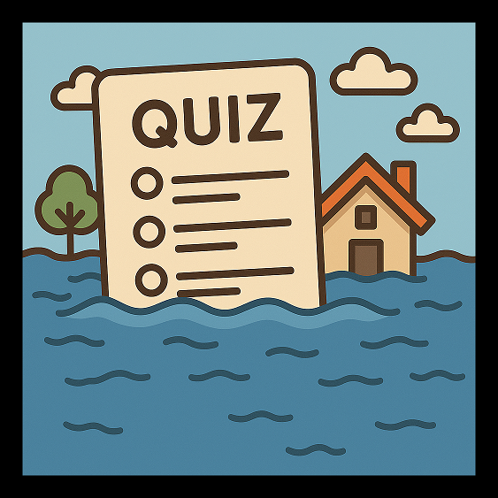
水災問答
彈出水災相關題目，答對加分。
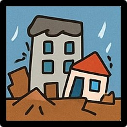
地震啦
彈出地震問題，答對的話，自己的高樓大廈保留，清空其他玩家的高樓大廈；答錯的話，清空自己的高樓大廈，保留別人的高樓大廈

火災啦
彈出火災問題，答對的話，自己的森林地保留，清空其他玩家的森林地；答錯的話，清空自己的森林地，保留別人的森林地
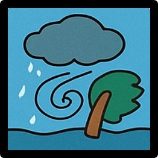
淹水啦
彈出水災問題，答對的話，自己的低窪地保留，清空其他玩家的低窪地；答錯的話，清空自己的低窪地，保留別人的低窪地
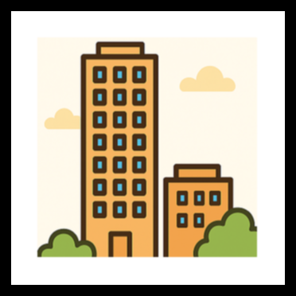
高樓大廈
可擁有的地產
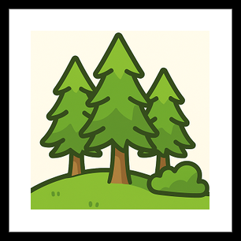
森林地
可擁有的地產。
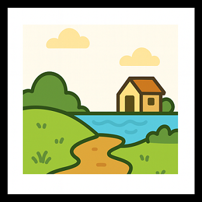
低窪地
可擁有的地產
退回起點
退回起點
🎴 事件卡 & 問答
事件卡（Event）
- 前進 1 / 2 格：往前行進。
- 退回 1 / 2 格：倒退
- 回到起點：回到起點，直接換人。
- 得 1 / 2 分：得分。
- 停一回合：暫停一回合
事件卡可以造成連鎖移動
知識問答（Quiz）
- 包含：地震、火災、水災等分類。
- 玩家移動後才出題。
- 答對加分（預設 +3），答錯不扣分，結束回合。
🏢 地產系統
購買與持有
- 可購買的地點：高樓大廈 、森林地 、低窪地，可以擴充
- 擁有足夠分數才能購買。
- 購買後該格背景會換成該玩家的顏色，比如玩家1是紅色，玩家2是藍色
- 其他玩家踩到時，要給對應的分數，若分數不足夠，能給多少就給多少
🏆 計分與勝利
加分來源
- 答對問答（預設 +3）。
- 撿到防災包（預設 +5）。
- 躲避（預設 +5）。
- 完成一圈（預設 +1）。
勝利條件
- 積分制：先達 目標分數（例如 20 分）。
- 限時制：時間結束，比較分數高低。
🗺️ 地圖編輯
常用功能
- 設定回合模式、分數/時間門檻，選擇玩家數與設定語言。
- 拖曳路徑圖可自行編輯路徑或載入預設地圖：地圖 1 / 2 / 3。
- 儲存並開始。
注意事項
- 拖曳路徑圖順序（placedOrder）會變成遊戲的行走順序。
- 圖片檔名要與遊戲相同（如 card2.png）。
❓ 我們遇到的問題
遊戲開始後空白一片？
地圖編輯沒有傳入遊戲開始頁面，必須要預設值。
退回 1 / 2 格會繞一圈？
要加移動動畫的方向，+1表示向前走，-1表示後退
「回到起點」會繞一圈？
如果是回到起點，直接把玩家位置設為0就好